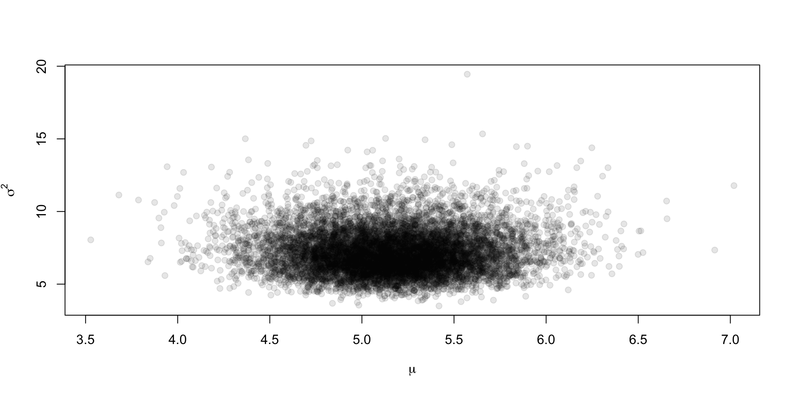
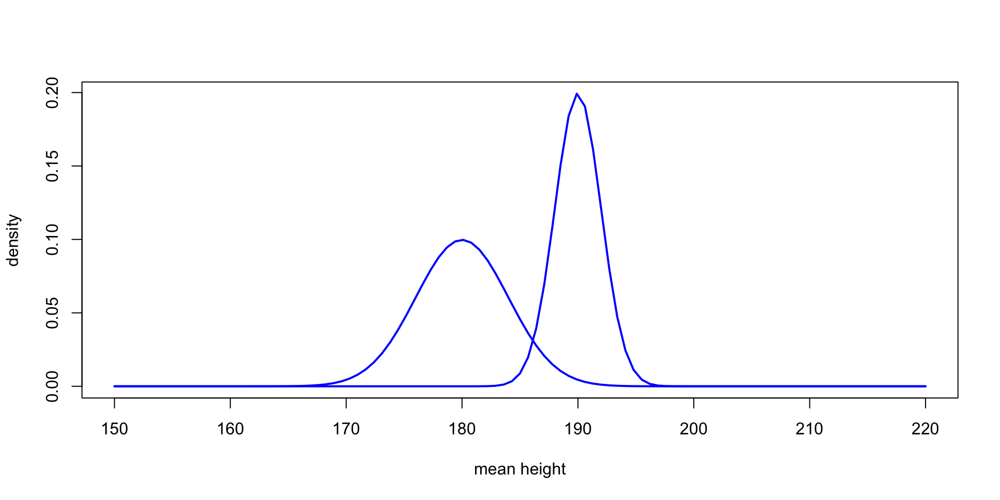
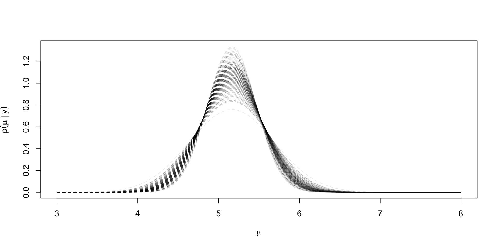
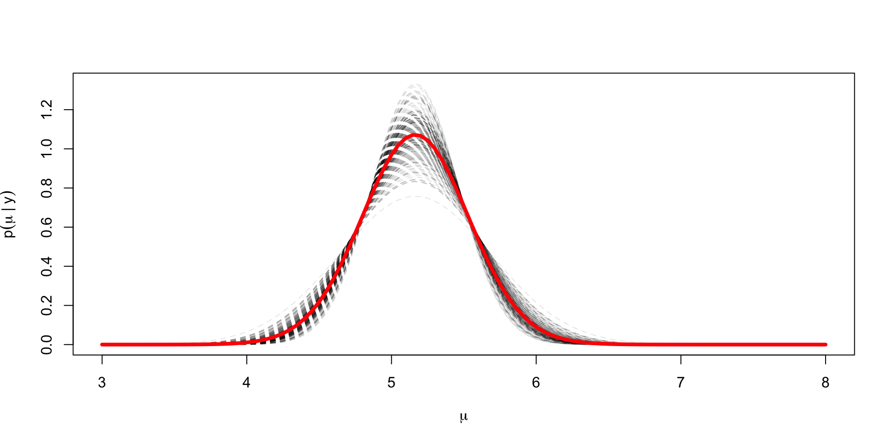
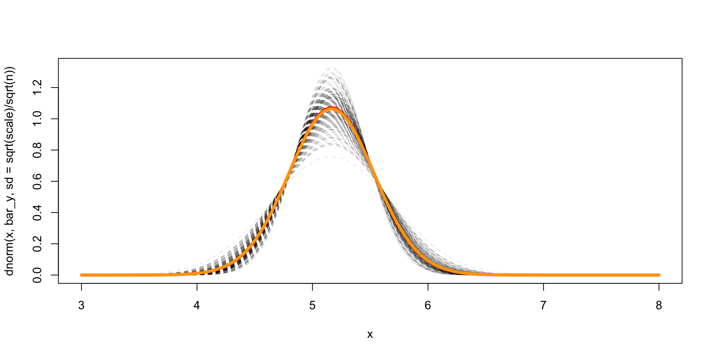
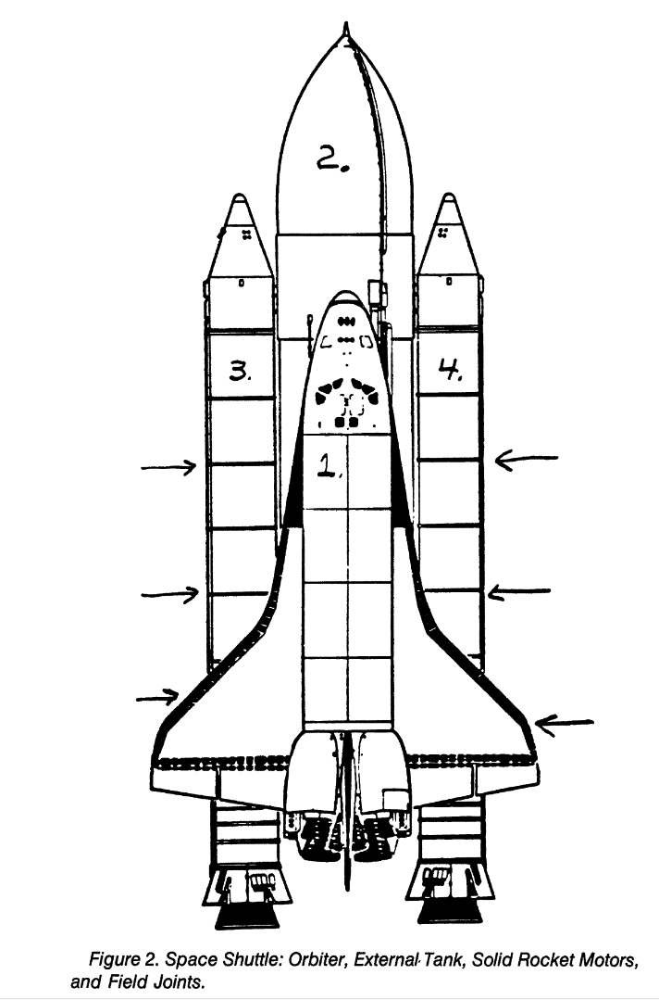
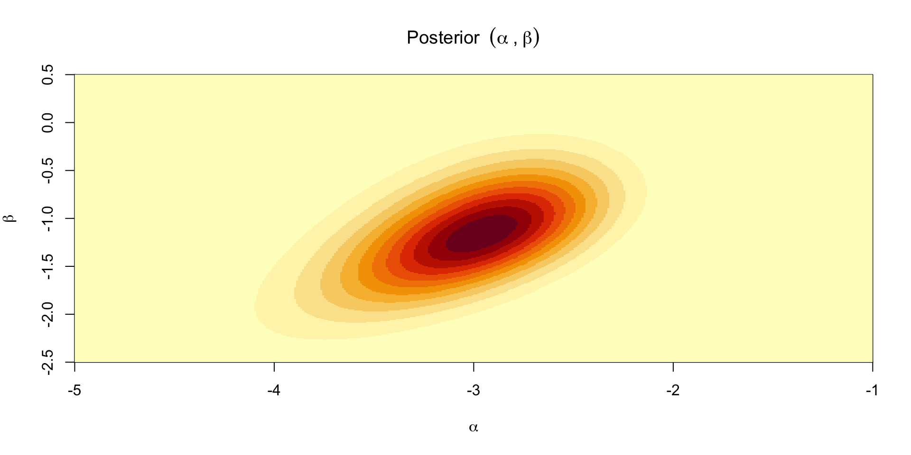
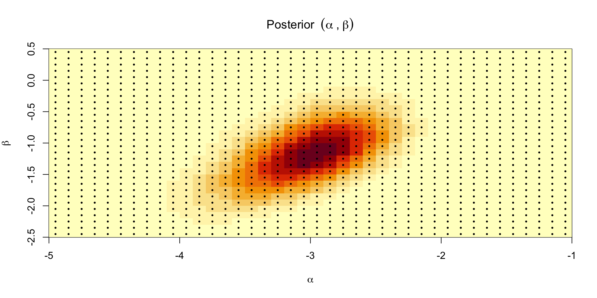
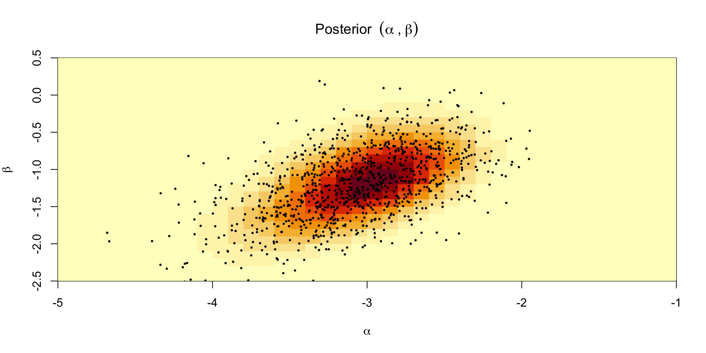
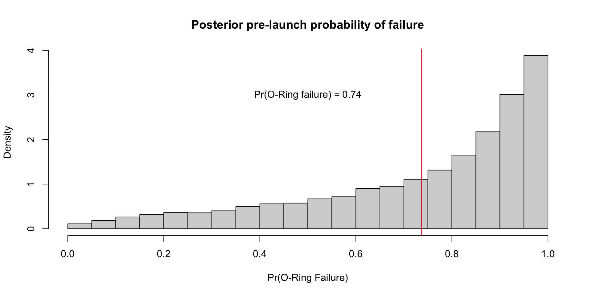

Multiple parameter models
Attribution
These slides are largely based on Aki Vehatri’s Bayesian Data Analysis course at Aalto University in Espoo, Finland
The material for this course is here: https://github.com/avehtari/BDA_course_Aalto
Multiple parameters in statistical inference
As the number of parameters grow, statistical inference can get harder
For example, asymptotically we know that when we have a single parameter, say \(\theta_1\), our asymptotic variance is bounded below by the inverse of the Fisher information for \(\theta\), or \(i_{\theta_1, \theta_1}^{-1}(\theta_1)\)
When we have an additional parameter \(\theta_2\) that is then unkown, the asymptotic variance for \(\theta_1\) is now bounded below by \[ (i_{\theta_1,\theta_1}(\theta) - i_{\theta_1,\theta_2}(\theta)i_{\theta_2,\theta_2}^{-1}(\theta) i_{\theta_2,\theta_1}(\theta))^{-1} \geq i_{\theta_1, \theta_1}^{-1}(\theta_1) \]
The term \(i_{\theta_1,\theta_2}(\theta)i_{\theta_2,\theta_2}^{-1}(\theta) i_{\theta_2,\theta_1}(\theta)\) is the loss in information from having to estimate \(\theta_2\) (This material is from Severini (2000) § 3.6.3)
Often we’ll be able to partition our parameter space into a parameter of interest, \(\theta_1\) and will consider \(\theta_2\) a “nuisance” parameter
Survey from Severini (2000) on dealing with nuisance parameters
- Use a conditional likelihood for inference
- Find a statistic \(s\) that is sufficient for \(\theta_2\): \(p(t,s \mid \theta_1, \theta_2) = p(t \mid s, \theta_1)p(s \mid \theta_1, \theta_2)\) and do inference using \(p(t \mid s, \theta_1)\)
- One issue with this is that we can lose information about \(\theta_1\) from ignoring \(p(s \mid \theta_1, \theta_2)\) in our
- Use a marginal likelihood for inference
- Find a statistic \(t\) for which the following holds \(p(y \mid \theta_1, \theta_2) = p(t \mid \theta_1)p(y \mid t, \theta_1, \theta_2)\)
- Again, we lose information about \(\theta_1\) from ignoring the factor \(p(y \mid t, \theta_1, \theta_2)\)
- Use a profile likelihood
- “Profile out” \(\theta_2\), via: \(\log p(y \mid \theta_1, \hat{\theta}_2(y, \theta_1))\)
- Isn’t a “true likelihood” because it isn’t derived from the distribution of a random variable
- Use an integrated likelihood
- Integrate \(p(y \mid \theta_1, \theta_2)\) with respect to some weight function for \(\theta_2\)
- Also not a true likelihood
Bayesian approach to nuisance parameters
Let \(\theta_1\) be the parameter of interest and \(\theta_2 \in \Omega_{\theta_2}\) be the nuisance parameter
\[ p(\theta_1 \mid y) = \int_{\Omega_{\theta_2}} p(\theta_1, \theta_2 \mid y) d\theta_2 \]
Alternatively, we can write the same quantity as
\[ p(\theta_1 \mid y) = \int_{\Omega_{\theta_2}} p(\theta_1 \mid \theta_2, y)p(\theta_2 \mid y) d\theta_2 \]
Normal model with two unknown parameters
Let \(Y_i \mid \mu, \sigma^2 \sim \text{Normal}(\mu, \sigma^2)\)
What prior should we use for \(\sigma^2\)?
Gelman argues that a noninformative prior for a parameter \(\theta\), and \(u = \frac{y}{\theta}\) for which \[ p(\frac{y}{\theta} \mid \theta) = g(u) \] should lead to a posterior that equals \(g(u)\). This means that the posterior distribution for the quantity \(\frac{y}{\theta}\), or \(p(\frac{y}{\theta} \mid y)\) should still be free of \(\theta\) and be equal to \(g(u)\).
The derivation goes like this:
- Derive the implied density in \(y\), \(p(y \mid \theta)\) in terms of \(p(u \mid \theta) = g(u)\)
- Derive the implied density for \(\theta \mid y\), \(p(\theta \mid y)\) in terms of \(p(u \mid y) = g(u)\)
- Figure out what this implies for \(p(\theta)\)
Reminder: transformation of variables
- Suppose we have a density for \(y\), \(p(y)\) and let \(u = f(y)\), which we suppose is 1-1 on the domain
- Then \(y(u) = f^{-1}(u)\) and \(p(u) = p(y) \abs{\frac{d}{du}f^{-1}(u)}\), aka the Jacobian of the \(y(u)\) transformation
- Useful mnemonic for figuring out which Jacobian is needed
- \[ p(y) dy = p(u) du \to p(y)\abs{\frac{dy}{du}} = p(u) \]
- \[ p(y) dy = p(u) du \to p(y) = p(u)\abs{\frac{du}{dy}} \]
Derivation of prior for scale parameters
Want \(p(y \mid \theta)\) expressed in terms of \(u = \frac{y}{\theta}\)
This means \[ \begin{aligned} p(y \mid \theta) & = p(u\mid \theta)\abs{\frac{du(y)}{dy}} \\ & = p(u\mid \theta)\frac{1}{\theta} \end{aligned} \]
Now want \(p(\theta \mid y)\) expressed in terms of \(u = \frac{y}{\theta}\)
This means \[ \begin{aligned} p(\theta \mid y) d\theta & = p(u \mid y)du \\ p(\theta \mid y) & = p(u \mid y)\abs{\frac{du}{d\theta}} \\ & = p(u \mid y)\frac{y}{\theta^2} \\ \end{aligned} \]
Now we equate \(p(u \mid \theta) = p(u \mid y) = g(u)\) by assumption
We have \(p(\theta \mid y) = \frac{y}{\theta^2} g(u)\) and we have \(p(y \mid \theta) = \frac{1}{\theta} g(u)\)
Thus \(p(\theta \mid y) = \frac{y}{\theta} p(y \mid \theta)\), or \[ p(\theta \mid y) \propto \frac{1}{\theta} p(y \mid \theta) \to p(\theta) \propto \frac{1}{\theta} \]
If we reparameterize to \(\eta = \theta^2\) so \(\eta^{1/2} = \theta\) and \(d\theta = \frac{1}{2} \eta^{-1/2}\) then \[ p(\eta) \propto \frac{1}{\eta} \]
Back to normal example
Our likelihood for the normal case is \[ p(y \mid \sigma^2, \mu) \propto (\sigma^2)^{-n/2}\exp \lp -\frac{1}{2\sigma^2} \sum_{i=1}^n (y_i - \mu)^2 \rp \]
The joint prior for \(\mu, \sigma^2\) is \(p(\mu, \sigma^2) \propto (\sigma^2)^{-1}\)
We can rewrite the sum of squares in the exponential like \[ \begin{aligned} \sum_{i=1}^n (y_i - \mu)^2 & = \sum_{i=1}^n (y_i - \bar{y} + \bar{y} - \mu)^2 \\ & = \sum_{i=1}^n (y_i - \bar{y})^2 + n (\bar{y} - \mu)^2 + (\bar{y} - \mu)\sum_{i=1}^n (y_i - \bar{y}) \\ & = \sum_{i=1}^n (y_i - \bar{y})^2 + n (\bar{y} - \mu)^2 \\ & = (n-1)s^2 + n (\bar{y} - \mu)^2 \end{aligned} \]
After substituting in the expression and multiplying by the prior, we’re left with \[ p(\sigma^2, \mu \mid y) \propto (\sigma^2)^{-(n/2 + 1)}\exp \lp -\frac{1}{2\sigma^2} ((n-1)s^2 + n (\bar{y} - \mu)^2) \rp \]
We can integrate out \(\mu\) by recognizing the kernel of the normal density \[ \int_{-\infty}^\infty \exp \lp -\frac{1}{2\sigma^2/n} (\bar{y} - \mu)^2 \rp = \sqrt{2\pi \sigma^2 / n} \]
Leaving \[ p(\sigma^2 \mid y) \propto (\sigma^2)^{-((n - 1)/2 + 1)}\exp \lp -\frac{(n-1)s^2}{2\sigma^2} \rp \]
Comparison between \(\sigma^2\) posteriors
- Posterior for \(\sigma^2\) when mean is known was shown to be: \[ p(\sigma^2 \mid y) \equiv \text{InvGamma}(\frac{n}{2}, \frac{nv}{2}) \]
- Vs. when mean is unknown \[ p(\sigma^2 \mid y) \equiv \text{InvGamma}(\frac{n-1}{2}, \frac{(n-1)s^2}{2}) \]
- Bayesian inference preserves the idea of losing a degree of freedom from estimating the mean, but it comes from integrating over the posterior for \(\mu\)
Joint distribution
Last lecture we showed that \(\mu \mid \sigma^2, y \sim \text{Normal}(\bar{y}, \sigma^2/ n)\)
Then the joint distribution is \[ p(\mu, \sigma^2 \mid y) = p(\mu \mid \sigma^2, y) p(\sigma^2 \mid y) \]
From the last slide we have that \(p(\sigma^2 \mid y)\) is inverse gamma with parameters \(\alpha = \frac{n-1}{2}\) and \(\beta = \frac{(n-1)s^2}{2}\)
Simulating joint distribution:
- Draw \(1 / \sigma^2\) from a
rgammashape \(\frac{n-1}{2}\), rate \(\frac{(n-1)s^2}{2\sigma^2})\) - Draw \(\mu\) from
rnormwith mean \(\bar{y}\) and scale \(\sigma / \sqrt{n}\)
- Draw \(1 / \sigma^2\) from a
Draws from the joint
We take \(n = 50\) draws from rnorm(1, 5, 3), and we’ll generate \(S = 1\times10^4\) draws from the posterior
Plotting the joint

Plotting the marginal for \(\mu\)

Way to numerically marginalize
Seems intuitive that if you want to see what the posterior for \(\mu\) is ignoring the draws for \(\sigma^2\), you should just look at the one-dimensional histogram instead of a scatter as we did in the first plot
We can view this through the lens of Monte Carlo approximation of expectations, where we have \(\mu^{(s)} \sim p(\mu \mid y)\): \[ \Exp{g(\mu)} \approx \frac{1}{S} \sum_{s=1}^S g(\mu^{(s)}) \]
Our histogram displays an approximation to the density of \(\mu\); each bin’s height multiplied by the width approximates \(p(\mu \in \text{bin})\)
In this case our \(g_i(\mu) = \ind{\mu \in \text{bin}_i}\), so the histogram can be seen as a Monte Carlo approximation to \(p(\mu \in \text{bin}_i)\), or \[ \frac{1}{S} \sum_{s=1}^S \ind{\mu^{(s)} \in \text{bin}_i} \approx p(\mu \in \text{bin}_i) = \int_{\text{bin}_i}p(\mu \mid y ) d\mu \]
This indicator function should be expanded to include \((\sigma^2)^{(s)}\), so we get: \[ \frac{1}{S} \sum_{s=1}^S \ind{\mu^{(s)}\in \text{bin}_i, (\sigma^2)^{(s)} > 0} \approx \int_{\text{bin}_i} \int_{0}^\infty p(\mu, \sigma^2 \mid y) d\sigma^2 d\mu \]
Thus computing empirical averages of one variable is akin to marginalizing over all the other variables
Another way to plot the marginal for \(\mu \mid y\)
x <- curve(
dnorm(x, bar_y, sd = sqrt(scale)/sqrt(n)),
from = 3, to = 8,
lty = 2,
col = scales::alpha("black",0.1),
lwd = 1
)
dens_draws[idx_max,] <- x$y
for (idx in plt_draws) {
sv <- curve(
dnorm(x, bar_y,
sd = sqrt(1/inv_sigma_sq[idx])/sqrt(n)),
add = TRUE, lty = 2,
col = scales::alpha("black",0.1),
lwd = 1
)
dens_draws[idx,] <- sv$y
}
x <- curve(
dnorm(x, bar_y, sd = sqrt(scale)/sqrt(n)),
from = 3, to = 8,
lty = 2,
col = scales::alpha("black",0.1),
lwd = 1
)
dens_draws[idx_max,] <- x$y
for (idx in plt_draws) {
sv <- curve(
dnorm(x, bar_y,
sd = sqrt(1/inv_sigma_sq[idx])/sqrt(n)),
add = TRUE, lty = 2,
col = scales::alpha("black",0.1),
lwd = 1
)
dens_draws[idx,] <- sv$y
}
lines(grid, colMeans(dens_draws), col = "red", lwd = 4)
Exact marginal for \(\mu \mid y\)
The exact marginal for \(\mu \mid y\) can be derived from the joint posterior \[ p(\sigma^2, \mu \mid y) \propto (\sigma^2)^{-((n - 1)/2 + 1)}\exp \lp -\frac{1}{2\sigma^2} ((n-1)s^2 + n (\bar{y} - \mu)^2) \rp \]
Marginalizing over \(\sigma^2\) just involves accounting for the inverse of the normalizing constant of an inverse gamma RV, or \(\Gamma(\alpha) / \beta^\alpha\)
We know that \(\alpha = (n-1)/2\), but here \(\beta = ((n-1)s^2 + n(\mu - \bar{y})^2)/2\), so we get: \[ \begin{aligned} p(\mu \mid y) & \propto \lp(n-1)s^2 + n(\mu - \bar{y})^2\rp^{-(n-1)/2} \\ & \propto \lp 1 + \frac{n(\mu - \bar{y})^2}{(n-1)s^2 }\rp^{-(n-1)/2} \end{aligned} \]
Thus, \(\mu \mid y\) is a \(t_{n-1}(\bar{y}, s^2 / n)\) distributed
True to form, the pivot is free of parameters \(\mu\) or \(\sigma\) \[\frac{\mu - \bar{y}}{s/\sqrt{n}} \mid y \sim t_{n-1}\]
Parallels the sampling theory result, that \[ \frac{\bar{y} - \mu}{s/\sqrt{n}} \mid \mu, \sigma^2 \sim t_{n-1} \]
Comparison of exact to MC estimate

Posterior predictive distribution
Want to find \(p(\tilde{y} \mid y)\), but we’ll start with \(p(\tilde{y} \mid \sigma^2, y)\)
\[p(\tilde{y} \mid \sigma^2, y) = \int_{\R} p(\tilde{y} \mid \mu, \sigma^2) p(\mu \mid \sigma^2, y) d\mu\]
\[\phantom{p(\tilde{y} \mid \sigma^2, y)} = \int_{\R} \textrm{N}(\tilde{y} \mid \mu, \sigma^2) \textrm{N}(\mu \mid \bar{y}, \sigma^2/n) d\mu\]
\[\phantom{p(\tilde{y} \mid \sigma^2, y)} = \textrm{N}\lp \tilde{y} \mid \bar{y}, \sigma^2\lp 1 + \frac{1}{n}\rp\rp\]
Almost \(\textrm{N}(\mu \mid \bar{y}, \sigma^2/n) d\mu\), so
\[p(\tilde{y} \mid y) = \textrm{t}_{n-1}\lp \bar{y}, \lp1 + \frac{1}{n}\rp s^2\rp\]
Conjugate prior for \(\mu, \sigma^2\)
The conjugate prior for \(\mu, \sigma^2\) is going to be of the same form of the posterior we derived under the noninformative prior
In sampling notation we get: \[ \begin{aligned} \sigma^2 & \sim \text{InvGamma}(\frac{\alpha_0}{2}, \frac{\alpha_0}{2} \nu_0) \\ \mu \mid \sigma^2 & \sim \text{Normal}(\mu_0, \sigma^2 / \kappa_0) \end{aligned} \]
The posterior is thus: \[ \begin{aligned} \sigma^2 \mid y & \sim \text{InvGamma}\lp\frac{\alpha_0 + n}{2}, \frac{1}{2}\lp \alpha_0\nu_0 + (n-1)s^2 + \frac{n\kappa_0}{\kappa_0 + n}(\mu_0 - \bar{y})\rp\rp \\ \mu \mid \sigma^2, y & \sim \text{Normal}(\frac{\kappa_0 \mu_0 + n \bar{y}}{\kappa_0 + n}, \sigma^2 / (\kappa_0 + n)) \end{aligned} \]
Let’s derive it
Prior for \(\sigma^2\): \[p(\sigma^2 \mid \alpha_0, \nu_0) \propto (\sigma^2)^{-(\alpha_0/2 + 1)} e^{-\frac{\alpha_0 \nu_0}{2\sigma^2}}\]
Prior for \(\mu\): \[p(\mu \mid \mu_0, \kappa_0, \sigma^2) \propto (\sigma^2)^{-1/2}\exp\lp-\frac{1}{2\sigma^2/\kappa_0}(\mu - \mu_0)^2 \rp\]
Likelihood \(p(y \mid \mu, \sigma^2)\): \[ p(y \mid \mu, \sigma^2) \propto (\sigma^2)^{-\frac{n}{2}}\exp \lp-\frac{1}{2\sigma^2}((n-1)s^2 + n(\bar{y} - \mu)^2) \rp \]
Posterior \[ \begin{aligned} p(\mu, \sigma^2 \mid y) & \propto (\sigma^2)^{-(\frac{1}{2} + \frac{n}{2} + \frac{\alpha_0}{2} + 1)} \\ & \exp\lp-\frac{1}{2\sigma^2}\lp(n-1) s^2 + n(\mu - \bar{y})^2 + \kappa_0(\mu - \mu_0)^2 + \frac{\alpha_0 \nu_0}{2} \rp \rp \end{aligned} \]
Now need to integrate over \(\mu\) to get \(p(\sigma^2 \mid y, \text{hyperparameters})\)
Focus on the term: \[ \exp\lp-\frac{1}{2\sigma^2}\lp n(\mu - \bar{y})^2 + \kappa_0(\mu - \mu_0)^2 \rp \rp \]
Expand out the square: \[ n\mu^2 - 2n \bar{y}\mu + n \bar{y}^2 + \kappa_0\mu^2 - 2 \kappa_0 \mu \mu_0 + \kappa_0 \mu_0^2 \]
Collect terms: \[ (n + \kappa_0)\mu^2 - 2\mu(n \bar{y} + \kappa_0 \mu_0) + n \bar{y}^2 + \kappa_0 \mu_0^2 \]
Factor our \(n + \kappa_0\): \[ (n + \kappa_0)\lp \mu^2 - 2\mu\frac{n \bar{y} + \kappa_0 \mu_0}{(n + \kappa_0)} + \frac{n \bar{y}^2 + \kappa_0 \mu_0^2}{n + \kappa_0}\rp \]
Complete the square by adding and subtracting \(\lp\frac{n \bar{y} + \kappa_0 \mu_0}{(n + \kappa_0)}\rp^2\): \[ (n + \kappa_0)\lp (\mu - \frac{n \bar{y} + \kappa_0 \mu_0}{(n + \kappa_0)})^2 + \frac{n \bar{y}^2 + \kappa_0 \mu_0^2}{n + \kappa_0} - \lp\frac{n \bar{y} + \kappa_0 \mu_0}{(n + \kappa_0)}\rp^2\rp \]
Now the density in \(\mu\) is \[ p(\mu \mid y, \sigma^2) \propto \exp\lp-\lp\frac{n + \kappa_0}{2\sigma^2}\lp \mu - \frac{n \bar{y} + \kappa_0 \mu_0}{(n + \kappa_0)}\rp^2 \rp\rp \] To get this to integrate to \(1\) we need a normalizing constant \(\lp 2\pi \sigma^2/(n + \kappa_0)\rp^{-1/2}\)
This leaves the following density after integration: \[ \lp 2\pi \sigma^2/(n + \kappa_0)\rp^{1/2}\exp\lp-\lp\frac{n + \kappa_0}{2\sigma^2}\lp \frac{n \bar{y}^2 + \kappa_0 \mu_0^2}{n + \kappa_0} - \lp\frac{n \bar{y} + \kappa_0 \mu_0}{(n + \kappa_0)}\rp^2\rp \rp\rp \]
Expand \((n\bar{y} + \kappa_0 \mu_0)^2 = n^2 \bar{y}^2 + 2 \kappa_0 n \bar{y} \mu_0 + \kappa_0^2 \mu_0^2\)
Multiply the first term by \(n - \kappa_0\) to yield \(n^2 \bar{y}^2 + n \kappa_0 \mu_0^2 + \kappa_0 n \bar{y}^2 + \kappa_0 \mu_0^2\)
Combining leaves: \[ \frac{n \kappa_0 \mu_0^2 + \kappa_0 n \bar{y}^2 - 2 \kappa_0 n \bar{y}\mu_0}{(n + \kappa_0)^2} = \frac{n\kappa_0 (\bar{y}^2 - \mu_0)^2}{(n + \kappa_0)^2} \]
Finally: \[ \lp 2\pi \sigma^2/(n + \kappa_0)\rp^{1/2}\exp\lp-\lp\frac{1}{2\sigma^2}\lp\frac{n\kappa_0}{n + \kappa_0} (\bar{y}^2 - \mu_0)^2 \rp \rp\rp \]
Combining with the rest of the terms we’ve been carrying around: \[ \begin{aligned} p(\mu, \sigma^2 \mid y) & \propto (\sigma^2)^{-(\frac{1}{2} + \frac{n}{2} + \frac{\alpha_0}{2} + 1)}(\sigma^2)^{\frac{1}{2}} \\ & \exp\lp-\frac{1}{2\sigma^2}\lp(n-1) s^2 + \frac{n\kappa_0}{n + \kappa_0} (\bar{y}^2 - \mu_0)^2+ \frac{\alpha_0 \nu_0}{2} \rp \rp \end{aligned} \]
This is an inverse gamma density with \(\frac{n}{2} + \frac{\alpha_0}{2}\) shape parameter and the rate parameter \[ \frac{(n-1) s^2 + \frac{n\kappa_0}{n + \kappa_0} (\bar{y}^2 - \mu_0)^2+ \frac{\alpha_0 \nu_0}{2}}{2} \]
Generalized linear models
\(y_i \sim p(g^{-1}(\alpha + \beta x_i), \phi)\) \(i = 1, \dots, n\)
\(p\) is non-normal
\(g\) is a link function \(\Exp{y_i \mid x_i, \alpha, \beta} = g^{-1}(\alpha + \beta x_i)\)
We’ll use the Challenger data as an example
Challenger disaster

Space shuttle diagram from Dalal, Fowlkes, and Hoadley (1989)
Preflight data

Analysis performed night prior to launch (!)
Model
\(y_i \mid K_i, \theta_i \sim \text{Binomial}(6, \theta_i)\)
\(\text{logit}(\theta_i) = \alpha + \beta \,\text{temp}_i\)
\(\text{logit}(\theta_i) = \log \lp\frac{\theta_i}{1 - \theta_i} \rp\)
\(g^{-1}(\alpha + \beta \, \text{temp}_i) = \text{logit}^{-1}(\alpha + \beta \, \text{temp}_i)\)
\(\text{logit}^{-1}(z) = \frac{1}{1 + e^{-z}} = \frac{e^z}{1 + e^z}\)
\(p(\alpha, \beta \mid y) \propto \prod_{i=1}^n \theta_i^{y_i}(1-\theta_i)^{6 - y_i} p(\alpha, \beta)\)
Posterior over \(\alpha,\beta\)
Can’t compute the normalizing constant so we need to approximate it
One option is to compute the posterior over a predefined set of grid points
Define \([\alpha_{\text{min}}, \alpha_{\text{max}}] \times [\beta_{\text{min}}, \beta_{\text{max}}]\)
Compute \(\prod_{i=1}^n \theta_i^{y_i}(1-\theta_i)^{6 - y_i} p(\alpha, \beta)\) at the midpoint of each grid cell
Multiply by the area of the cell to get \(C p(\alpha, \beta \mid y)\)
Sum over all the cells to get \(C\)
Posterior mass at a point in the grid is \(\prod_{i=1}^n \theta_i^{y_i}(1-\theta_i)^{6 - y_i} p(\alpha, \beta) / C\)
Plotting the approximate posterior




Grid sampling
- We can use samples from the grid to compute something like the probability of a failure on the morning of the launch, which was expected to be 31 degrees F: \[ \Exp{\text{logit}^{-1}(\alpha + \beta \times 31) \mid y} \approx \frac{1}{S}\sum_{s=1}^S \text{logit}^{-1}(\alpha^{(s)} + \beta^{(s)} \times 31) \]
- We can also compute the same quantity using the values from the grid: \[ \Exp{\text{logit}^{-1}(\alpha + \beta \times 31) \mid y} \approx \sum_{g=1}^G \text{logit}^{-1}(\alpha^{(g)} + \beta^{(g)} \times 31)w_g \]
- Perhaps a more useful quantity is the posterior pre-launch probability of at least 1 failed O-ring: \[ \Exp{\text{At least 1 failure} \mid y} \approx \frac{1}{S}\sum_{s=1}^S 1 - (1 - \text{logit}^{-1}(\alpha^{(s)} + \beta^{(s)} \times 31))^6 \]
Posterior for \(\theta(x_i)\)

Posterior for \(\tilde{y}_{\text{launch}}\)